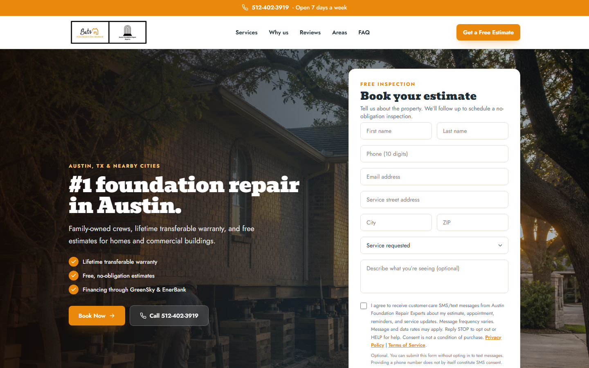

Book a free estimate — not another WordPress clone
The origin site is austinfoundationrepairexperts.com. This subdomain is a conversion surface: headline, trust points, phone CTA, and a full estimate form above the fold. Privacy and terms pages sit next to an unchecked SMS consent checkbox so 10DLC language is present without making consent required.
- Phone, email, street, city, ZIP, service, and notes
- Optional SMS consent · HELP/STOP language · policy links
- Conversion design
- Next.js
- Cloudflare Workers
- CallRail
- SMS consent UX